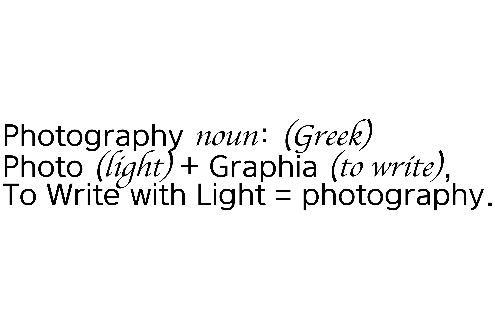
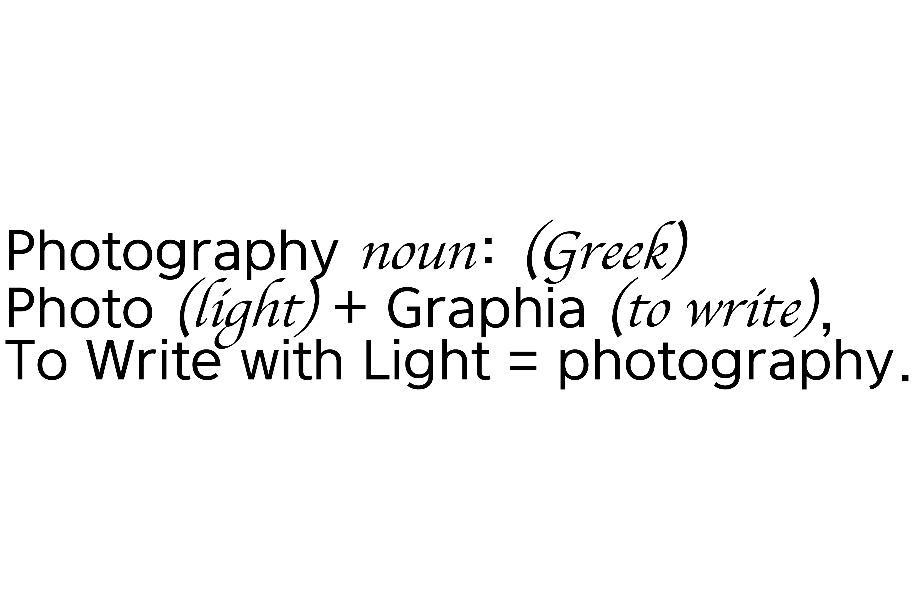

What is Photography?
사진이란 정확히 무엇인가? 사진은 빛을 포착하여 이미지를 창조하는 예술과 실천이다. 이미지는 센서에 의해 전자적으로 또는 필름과 같은 것에 의해 화학적으로 기록되고, 그리고 나서 인쇄, 투영 또는 기록된다.
사진 촬영을 시작하려면 어떤 유형의 카메라가 필요할까?
우리는 사진의 세계가 수많은 용어로 가득 차 있다는 것을 누구나 알고 있을것이다. 입문자에게는 정말 두려울 수 있다. 또한 시도 할 수 있는 다양한 유형의 사진들이 있다. 먼저 시작하기 전에 당신이 무엇을 좋아하는지를 정확히 알아야하고 그거에 따라 맞는 장비들을 선택해야 한다.
우리가 해줄 조언으로는 일반적인 저렴한 카메라로 시작하여 당신이 좋아하는 느낌의 사진을 찾는 시간을 갖고 그리고 그 후에 카메라를 업그레이드 하거나 보완을 하는 것이다.


copyright © 2020 Web Design